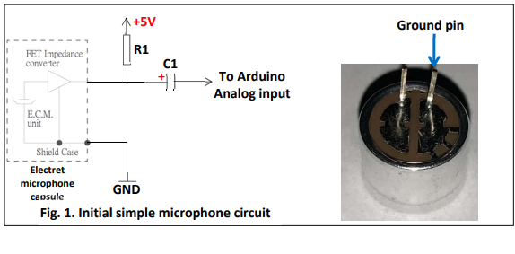
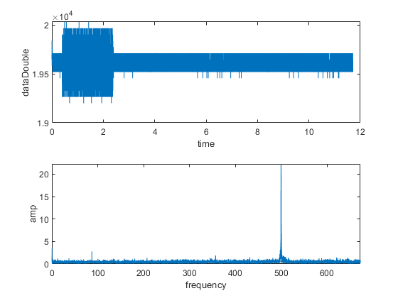
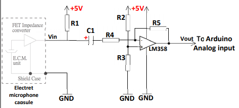
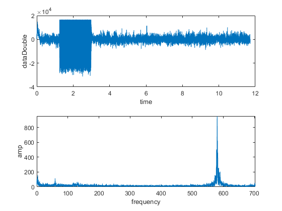
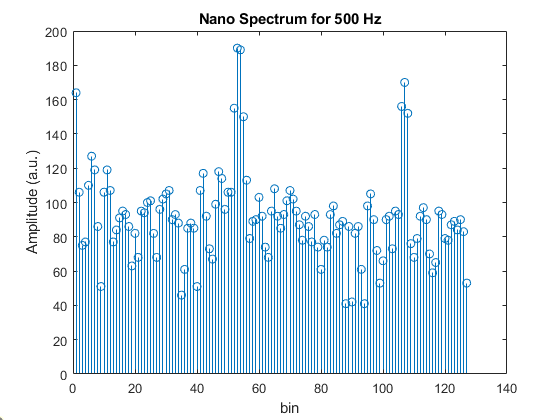
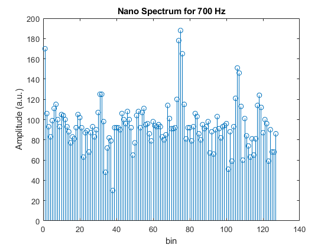
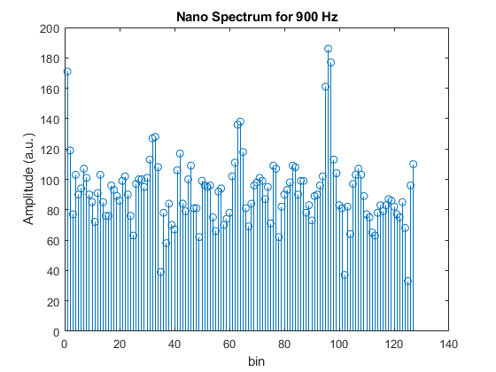

Objectives
- Implement and test passive and active filters using:
- Hardware
- Software (Computer and MATLAB)
- Compare theoretical and measured outputs of filtering
- Implement a bandpass filter
Filters in LTSpice
In this lab, we implement and test different filters to observe their behavior. The type of filter determines what range of signal frequencies are attenuated and passed-through the circuit. The three types of filters in this lab are
- Low Pass Filter
- High Pass Filter
- Band Pass Filter
Coding the Arduino and MATLAB to Characterize Circuits
In this section, we build a microphone circuit with and without filtering to experimentally measure the behavior of these filters. The arduino is configured to use the ADC and measure signals captured by the circuit. Below is a picture of the microphone circuit without any filter and its FFT. The FFT was calculated in MATLAB using the data from the Arduino. It is important to note that this data was modified to be a signed 16 bit number from the measured range of 0 to 1023. The microphone circuit pictured below was tested on MATLAB using a 500 Hz chirp. The resulting time and frequency plots are shown below.
 Microphone circuit used to capture sound on the Arduino  Time and frequency domain plots of measured sound
Improving the Microphone Circuit
From the plot above, the amplitude is not too high, so we remedy this by adding an amplifier to the circuit. Pictured below is the aforementioned circuit and its corresponding time and frequency plots for the same MATLAB test. Here we can see that the peak amplitude is much larger than the microphone without amplification.  Mic circuit with amplifier  Time and frequency domain plots of measured sound at 500 HzFFT on Arduino
In this section, we will be using a FFT package for the Arduino to calculate the FFT of the microphone data. Here we have to modify the code we used to configure the ADC, lower the baud rate, and utilize an ISR to collect data. The Arduino Nano should accumlate ADC 257 sampled values, 256 of which will be used for calculations (exclude the first value). Each sample will be taken at intervals of 0.41667 ms, which is much larger than the sampling interval of the ADC, and satisfies the Nyquist rate. An interrupt timer will be configured to the specified interval and the ISR will read the ADC value once before exiting. This will continue until 257 samples have been collected. The FFT is then calculated for the data set after it has been converted to signed 16 bit integers. Below, is the FFT of three tests using a 500Hz, 700Hz, 900Hz chirp.
   FFT corresponding to tests of 500Hz, 700Hz, and 900Hz signal. Bin 50 corresponds to ~500 Hz and so on.